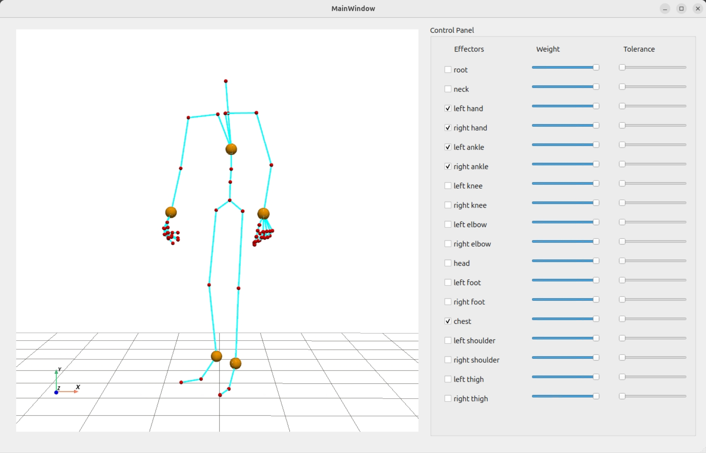
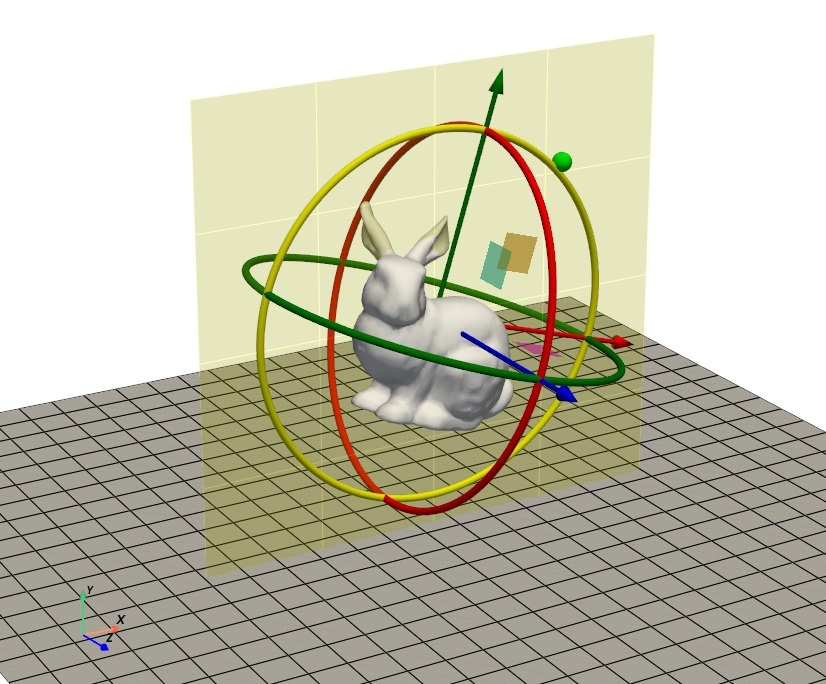

(Under construction) This portfolio primarily features educational code repositories that I developed while reproducing well-known methods.

PyTorch re-implementation of neural IK SMPLIK
Re-implementation of SMPL-IK, a representative neural inverse-kinematics approach. Compared with the original PyTorch Lightning + Unity UI codebase, this version uses plain PyTorch and a PyQt5 UI for study and prototyping.


3D Transformation Widget for Python
A reusable plugin module that provides an interactive 3D transformation widget for manipulating objects in a Python-based viewer.
[software]
All rights reserved.